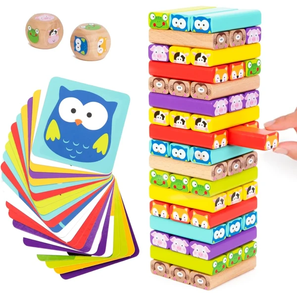
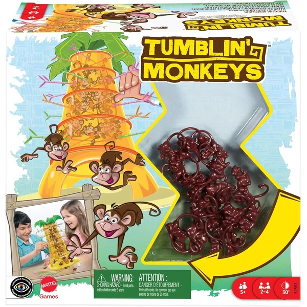
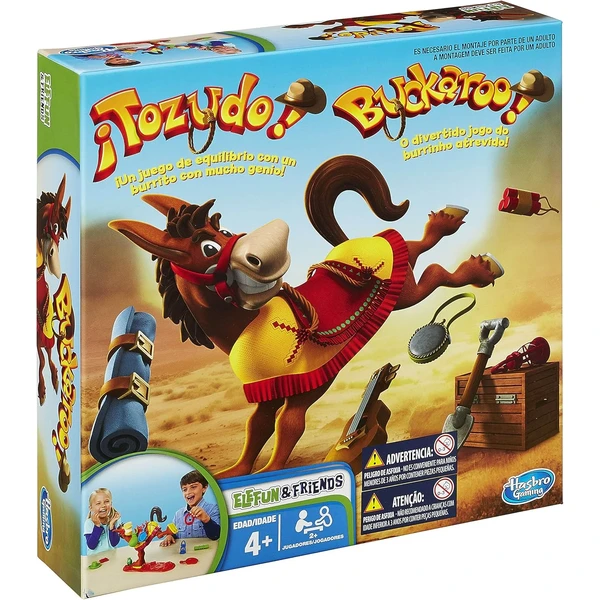
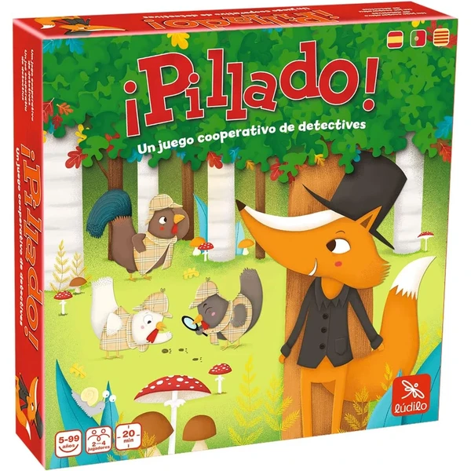
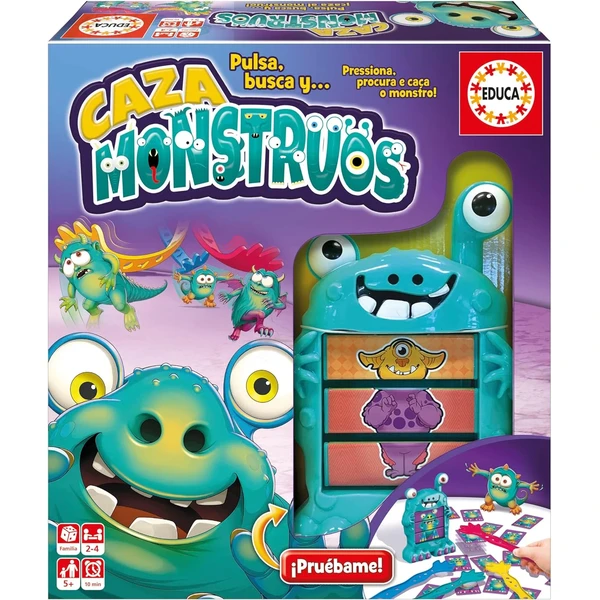
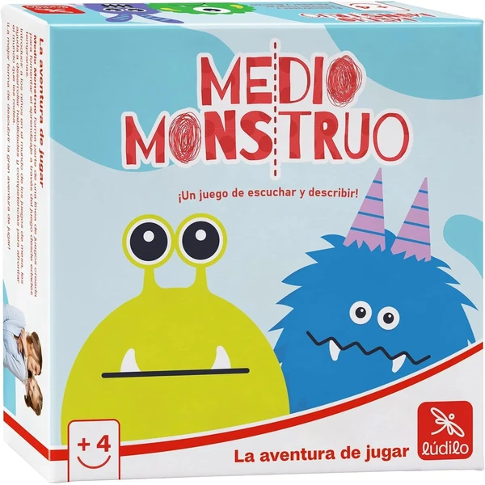

Nene Toys Torre de Bloques 4 en 1
Una torre de bloques de madera con cuatro formas de jugar: construir con dado, adivinar con cartas de animales, hacer construcciones libres o montar una cadena de dominó. Pensada para jugar en familia.
⭐ ¿Por qué nos gusta?
- ✔ Cuatro juegos distintos en un solo set.
- ✔ Madera con pintura no tóxica, bordes redondeados.
- ✔ Fomenta motricidad fina y reconocimiento de color.
💬 Lo que más destacan las familias
Muchos padres coinciden en que lo mejor es tener cuatro juegos en uno, así que se adapta al momento: partidas rápidas con el dado o construcciones más tranquilas cuando el niño quiere jugar solo. También se agradece que sea de madera resistente, porque aguanta bien el uso diario.
Ver en Amazon

Mattel Games Monos Locos
Un juego de habilidad donde hay que sacar palitos de colores de una red sin que los monos se caigan del árbol, siguiendo el color indicado por el dado en cada turno.
⭐ ¿Por qué nos gusta?
- ✔ Reglas sencillas, fáciles de explicar.
- ✔ Partidas de unos 30 minutos.
- ✔ De 2 a 4 jugadores, ideal en familia.
💬 Lo que más destacan las familias
Una de las cosas más comentadas es lo rápido que se explican las reglas, así que enseguida se ponen a jugar sin necesidad de que un adulto medie constantemente. La tensión de no saber quién hará caer a los monos suele arrancar bastantes risas en cada partida.
Ver en Amazon

Hasbro Gaming ¡Tozudo!
Un juego de equilibrio en el que hay que cargar con cuidado el equipaje en la silla de un burrito de juguete, sin que dé una coz y lo tire todo por los aires. Incluye tres niveles de dificultad.
⭐ ¿Por qué nos gusta?
- ✔ Tres niveles de dificultad para ir subiendo el reto.
- ✔ Mecánica de equilibrio, distinta a un juego de tablero clásico.
- ✔ De 2 a 4 jugadores.
💬 Lo que más destacan las familias
Se repite bastante el comentario de que la sorpresa de la coz del burrito engancha tanto a niños como a adultos, y que las partidas se llenan de risas nerviosas mientras se apila el equipaje. Los tres niveles de dificultad también gustan para ir subiendo el reto a medida que cogen soltura.
Ver en Amazon

Ludilo Pillado
Un juego de mesa cooperativo en el que todos los jugadores colaboran para seguir pistas y descubrir juntos quién se llevó la tarta. Partidas de unos 20 minutos.
⭐ ¿Por qué nos gusta?
- ✔ Mecánica cooperativa, se gana o se pierde en equipo.
- ✔ Fomenta lógica y resolución de problemas.
- ✔ Partidas de unos 20 minutos.
💬 Lo que más destacan las familias
Los compradores valoran especialmente que sea un juego cooperativo, porque quita la presión de perder frente a otro niño y convierte la partida en una investigación conjunta. Seguir pistas para resolver el misterio de la tarta suele mantener enganchados incluso a los más pequeños del grupo.
Ver en Amazon

Educa Caza Monstruos
Un juego de agilidad visual en 3D donde hay que ser el más rápido en capturar con una garra el monstruo correcto, según la combinación de cabeza, cuerpo y pies que indica la carta.
⭐ ¿Por qué nos gusta?
- ✔ Formato de juego en 3D, muy visual.
- ✔ Desarrolla agilidad visual y rapidez de reflejos.
- ✔ De 2 a 4 jugadores.
💬 Lo que más destacan las familias
Entre los comentarios más habituales aparece lo mucho que gusta el formato en 3D, que hace que el juego se sienta más activo que un tablero plano de toda la vida. La rapidez para atrapar al monstruo correcto también genera bastante emoción entre los jugadores.
Ver en Amazon

Ludilo Medio Monstruo
Un juego de mesa en el que hay que juntar las mitades correctas para crear monstruos, describiendo cada uno con tres atributos distintos. Partidas de unos 10 minutos.
⭐ ¿Por qué nos gusta?
- ✔ Desarrolla vocabulario y reconocimiento de formas y colores.
- ✔ Partidas muy cortas, de unos 10 minutos.
- ✔ De 2 a 4 jugadores.
💬 Lo que más destacan las familias
No es raro encontrar comentarios sobre lo bien que funciona para las tardes en las que solo hay tiempo de jugar un rato corto, ya que las partidas se resuelven en pocos minutos. Inventar los monstruos combinando las mitades suele ser la parte que más risas provoca.
Ver en Amazon